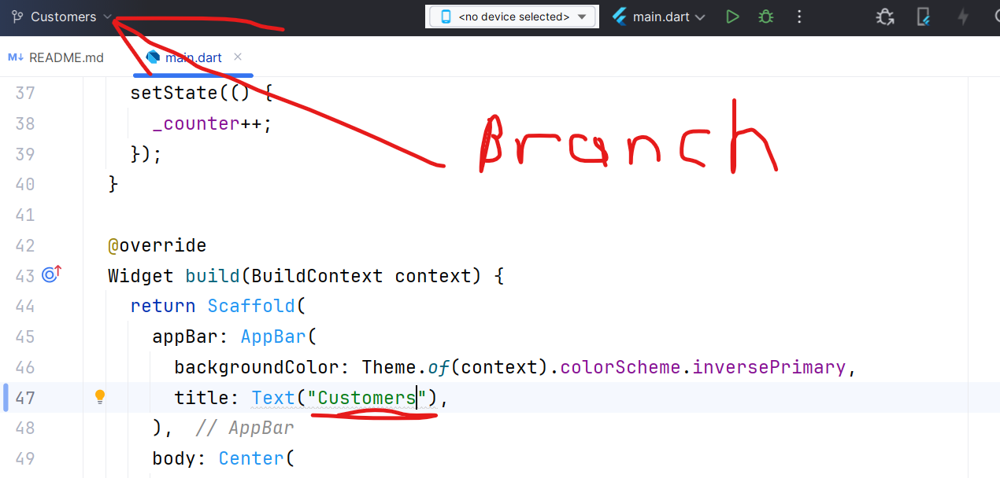
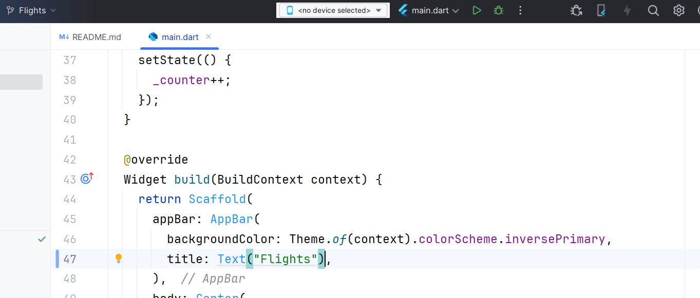
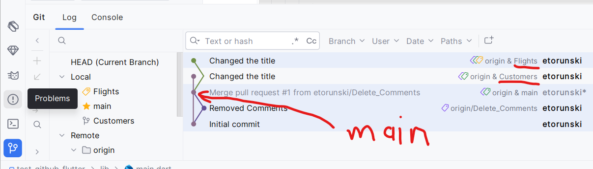
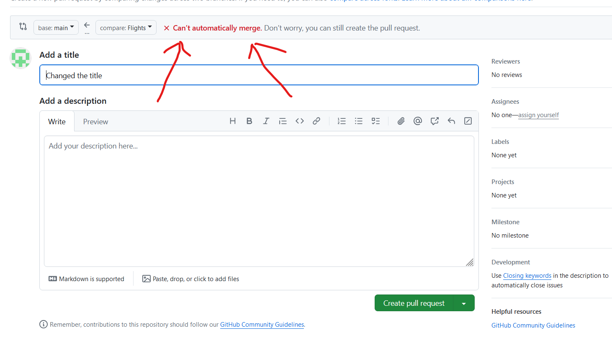
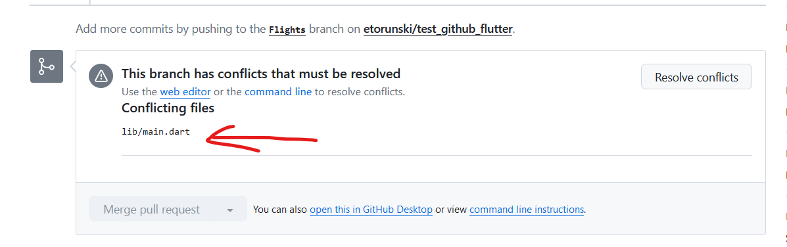
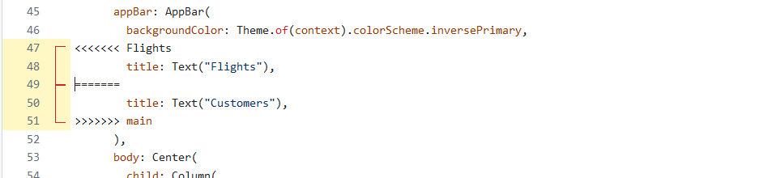
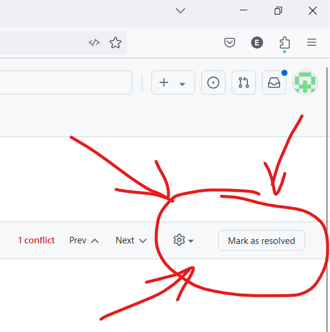
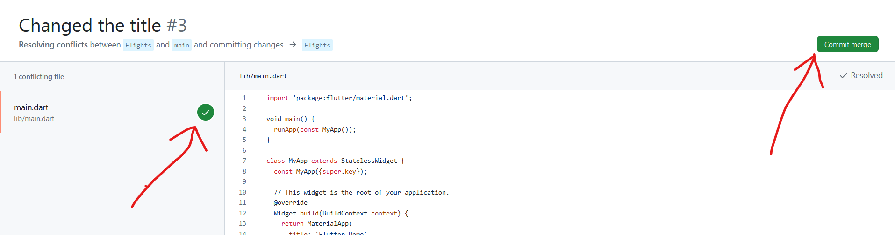
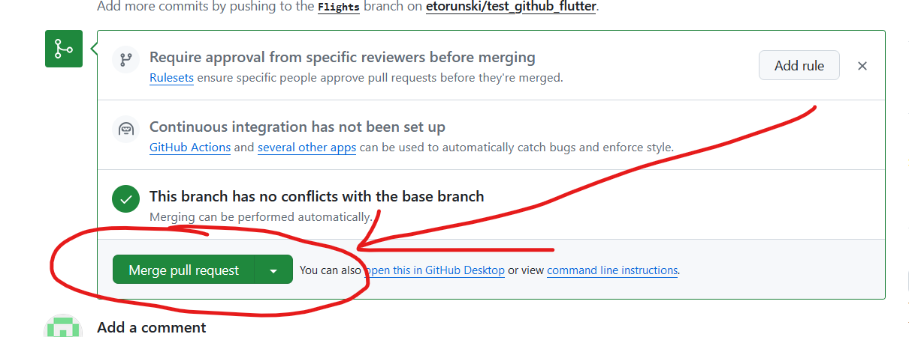

A Merge conflict happens when two commits want to make changes to the same line of a file. Let's create two branches to see how that happens. Create a new branch called "Customers":
git branch Customers
Now create a new branch called "Flights":
git branch Flights
Now checkout the Customers branch: git checkout Customers. Go to the scaffold and let's change the Title of our app on line 47 to be "Customers":

Then commit the changes and push them to Github:
git commit -am "Changed the title" git push origin Customers
Then checkout the Flights branch: git checkout Flights. Change the same title to "Flights":

Then push the changes to Github:
git commit -am "Changed the title" git push origin Flights
If you look at the git tab in AndroidStudio, you'll see that there are two branches coming out from main:

Repeat the steps from before to merge the Customers branch onto the main branch. When you are done, delete the Customers branch from Github and from your computer.
There shouldn't be any problems because there shouldn't be any conflicts when merging the first branch.
Then create a pull request to merge the Flights branch onto the main branch.
You'll get a warning that you can't automatically merge but you can still create the pull request:

Go ahead and click on the Green button to create the pull request. Then you will see which files are causing the conflicts and you will have the chance to resolve them:
If you click on the Resolve Conflicts button, you will then see a text editor showing you one or more conflicting regions:

The first branch will have the line: <<<<<<<<<<<<<Flights
The Flights is just the branch name, and then there will be: ================================ to show the end of
the first branch conflict.
Next will be another region of code followed by: >>>>>>>>>>> main
This is telling you that the Flights branch wants to insert: title:Text("Flights")
and the main branch
inserted: title:("Customers")
It is up to you to figure out how to mix the two. In our case, there can only be one title so you will have to get rid of
one of the regions.
<<<<<<<<<<<<< Branch1
AAAAAAAAA
==========================
BBBBBBBBBB
>>>>>>>>>>>>> Branch 2
So any time you see merge conflicts in github, you will see:
and it is up to you to mix the two regions into something that makes sense for the code. For your final project, you will come into this situation for the pubspec.yaml file so you can just mix the two regions. Other times, you will have conflicting lines of code so one of the regions will have to be deleted entirely. Once you are done, delete the lines that were put there to show the difference between the branches:
Delete these lines at the end:
<<<<<<<<<<<<< Branch1
===========================
>>>>>>>>>>>>> Branch 2
Once you believe the code has been merged properly, you click on the "Mark as resolved" button:

When all of the conflicting files have been resolved (you see a green checkmark) then the Commit merge button becomes activated and you can merge your pull request.

When your conflicts have all been resolved, then you can merge your pull request:

Then click on the "Confirm" button and then delete your branch when it's been merged. Everything should now be on the
main branch. Checkout the main branch on your computer: git checkout main. Then delete your Flights branch since it's
been merged: git branch -D Flights
Then you restart the sequence by pulling the latest code on the main branch from the server:
git pull and then create a new branch to implement your next feature.
You should always follow the same sequence for branches and pull requests:
Creating the small incremental changes will make sure that your merge conflicts remain small and manageable. If you don't do this regularly, then you will have a really big merge conflict that will be almost impossible to merge successfully. Normally, your commits and pull requests will tie in with project management software so that the bug report can be closed off with a link to your Pull Request that has 1 or more commits where you fixed the bug or added a new feature.